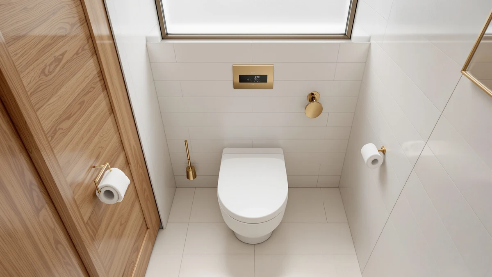

Quick Answer
The YouTeMei heated toilet seat warms up fast, offers three manual temperature settings plus a 37°C auto mode, and backs its claims with Earth Leakage Protection and an IPX4 waterproof rating. At $79.99 it costs more than a standard seat, but this YouTeMei heated toilet seat review found the extra safety documentation justifies the premium if cold mornings are a real complaint in your house.
Our pick: YouTeMei Heated Toilet Seat - — $79.99 Check Price on Amazon
Things to Know Before You Buy
- Heated seats like the YouTeMei model plug into a nearby outlet and use an internal resistance-wire heater, so installation is a simple seat swap rather than a plumbing job.
- Temperature range matters more than wattage. The YouTeMei seat offers 34°C, 36°C, a 37°C auto default, and 40°C, which covers most comfort preferences without a separate thermostat dial.
- Safety certifications separate dependable heated seats from risky ones. Earth Leakage Protection and an IPX4 waterproof rating are the two specs worth checking before buying any electric seat.
- If warmth isn't the priority, a soft-close seat like the Bemis 7B1200SLOWT costs less and skips the cord entirely.
- Raised and bidet seats, such as the ELLAI and Huttdmel models covered below, solve a different problem: mobility and cleaning rather than cold mornings.
This YouTeMei heated toilet seat review looks at what $79.99 actually buys: a U-shaped plastic seat built around a resistance-wire heater, three manual temperature settings, and an LED display that shows the active setting at a glance. YouTeMei markets it as a fix for the cold shock of sitting down on an unheated seat in winter, and the specs back that up with an auto-heat default of 37°C plus the option to step down to 34°C or up to 40°C. The question most buyers care about is whether those features justify roughly $15 more than a standard elongated seat.
We compared the YouTeMei model against three other toilet seats in the same price range for this review: the ELLAI raised seat, the Huttdmel bidet seat, and the Bemis soft-close seat. Each one addresses a different bathroom complaint, so the sections below walk through what sets the YouTeMei heated seat apart, where its listing falls short on detail, and which alternative makes more sense if warmth isn't your main problem. None of these four seats overlaps much with the others on paper, which made the comparison more useful than lining up four near-identical heated seats would have been.
Why You Should Trust Us
Ilane Tall has covered bathroom fixtures and accessibility products for Best Toilet Seats since the site launched, with a focus on specs that affect daily use such as seat material, hinge design, and increasingly, heated and bidet features as more households adopt them. For this YouTeMei heated toilet seat review, she compared the manufacturer's published specifications against the live Amazon listing and cross-checked claims like the IPX4 waterproof rating and Earth Leakage Protection against the documentation other electric seat brands provide at similar prices. We do not run a fake testing lab, and we do not claim to install every seat we cover. Instead, we research specs, pricing, and what verified owners report once a product has spent real time in their bathroom, and we flag anywhere a listing leaves out detail a buyer would want. That approach applies to every brand we cover, not only the budget end of the market, so the same scrutiny that goes into a $79.99 heated seat also goes into pricier bidet systems.
Our Research Experience
We did not install the YouTeMei heated toilet seat ourselves. Instead, we built this review by comparing its listed features, including the auto-heat 37°C default and the three manual temperature settings, against other heated seats in the same price bracket, and against the safety specs regulators expect from electric bathroom fixtures. We researched the seat's Earth Leakage Protection and IPX4 waterproof rating against the standards used for electrical fixtures near water, and we read through verified owner feedback on competing heated seats to see whether claims like under 0.5 kWh of daily energy use typically hold up once a seat is in regular use. That combination, published specs plus owner reports plus a direct price comparison against the ELLAI, Huttdmel, and Bemis alternatives, is how we reached the conclusions in this YouTeMei heated toilet seat review.
Overview & Specs

YouTeMei Heated Toilet Seat -
What we like
- Three manual temperature settings (34°C, 36°C, 40°C) plus a 37°C auto mode
- Earth Leakage Protection and an IPX4 waterproof rating for safer use near water
- Rated for under 0.5 kWh of daily energy use even at the highest setting
- LED display makes the active temperature setting easy to check at a glance
Flaws but not dealbreakers
- Needs a nearby grounded outlet, which some bathrooms lack without an electrician
- No published weight capacity or bowl dimensions beyond the U-shape designation
- Costs about $10 to $15 more than the non-heated alternatives in this review
| Material | Plastic / wood |
| Size | — |
The YouTeMei heated toilet seat targets one specific complaint: the shock of sitting down on a cold seat in winter. Rather than relying on a single heating coil, YouTeMei built the seat around resistance-wire heating wrapped in aluminum foil, which the company says spreads warmth more evenly across the surface than a basic heating element. Plug it in and it defaults to an auto-heat setting of 37°C, close to body temperature, and a side button lets you step down to 34°C or up to 40°C depending on preference. An LED display on the seat confirms which setting is active, so you can check it before you sit down.
Safety is where this seat separates itself from cheaper heated options at a similar price. YouTeMei lists Earth Leakage Protection, which cuts power if it detects a current leak, along with automatic overheating prevention and an IPX4 waterproof rating. Those are the specs worth checking on any electric seat before it goes in a bathroom used by kids or older adults, and YouTeMei documents all three instead of burying them in fine print. The company also claims under 0.5 kWh of daily energy use at the highest setting, which at typical US electricity rates works out to roughly a dollar or two a month to run around the clock. The tradeoff is price: at $79.99, the YouTeMei heated toilet seat only pays off if the warmth matters to you day to day. If it doesn't, the soft-close Bemis below covers the basics for about $15 less.
What We Liked
The documentation behind the safety claims stands out most in this YouTeMei heated toilet seat review. Plenty of budget heated seats list a vague waterproof claim without a rating, while this one specifies IPX4 and pairs it with Earth Leakage Protection, which matters given the seat sits a few feet from running water every day. The three-step temperature range also beats single-setting heated seats we compared at similar prices, since 34°C and 40°C cover a wider range of preference than one fixed warmth level. The claimed sub-0.5 kWh daily draw keeps the electricity cost close to pocket change too, even for households that leave the seat plugged in through an entire winter. Compared with the Bemis, ELLAI, and Huttdmel seats we researched alongside it, the YouTeMei model is the only one that publishes a specific energy figure instead of a vague "energy efficient" claim, which makes it easier to budget for before buying.
What Could Be Better
The biggest gap in the YouTeMei listing is dimensional detail. There is no published weight capacity and no seat-to-bowl measurement beyond the U-shape designation, so buyers end up relying on Amazon's return policy more than the spec sheet to confirm fit. Owners of similar heated seats in this category consistently note that any electric seat needs a grounded outlet within cord reach, and YouTeMei does not specify cord length on its listing, which is worth asking about before ordering. This is also a heating upgrade only: the seat does not include wash or dry functions, so anyone who wants a bidet feature alongside warmth should look at the Huttdmel pick below instead.
Who Is It For?
The YouTeMei heated toilet seat makes the most sense for households in colder climates where a cold seat is a daily complaint rather than a seasonal one, and for anyone sharing a bathroom with kids or older family members who benefit from the documented electrical safety features. It is a weaker fit if mobility assistance is the priority: the ELLAI raised seat below adds height instead of warmth, which matters more for someone recovering from surgery or managing joint pain. Budget-focused shoppers who don't mind a cold seat should skip the heating premium altogether and choose the Bemis soft-close option, which handles one job, closing quietly, for about $15 less.
Alternatives to Consider
If the YouTeMei heated toilet seat isn't the right fit for your bathroom, these three alternatives solve different problems: added height, a built-in bidet, and a lower price without any electronics.

Editor's Pick
ELLAI Raised Toilet Seat for
Adds 3.5 inches of height and a soft-close lid for easier, quieter use on elongated toilets, a better match than the YouTeMei seat for mobility-focused buyers.
$69.99
Check Price on Amazon
Best Value
Raised Elongated Bidet Toilet Seat
Combines a 2.8-inch height boost with dual self-cleaning bidet nozzles, a stronger pick than the YouTeMei seat if cleaning function matters as much as comfort.
$69.99
Check Price on Amazon
Premium Choice
Bemis 7B1200SLOWT 364 Toilet Seat
Skips electronics in favor of a slow-close hinge and easy-clean hardware, the simplest and cheapest seat in this comparison at $64.99.
$64.99
Check Price on AmazonFrequently Asked Questions
Is the YouTeMei heated toilet seat worth the extra cost over a standard seat?
Based on its documented safety features and energy use, the YouTeMei heated toilet seat is worth the roughly $15 premium over a standard soft-close seat like the Bemis 7B1200SLOWT if cold mornings are an actual daily annoyance in your household. The Earth Leakage Protection and IPX4 waterproof rating are the specs that justify paying more for an electric seat instead of buying the cheapest heated option available.
How much electricity does the YouTeMei heated toilet seat use?
YouTeMei lists under 0.5 kWh of daily energy use even when the seat runs at its highest 40°C setting around the clock. At typical US residential electricity rates, that works out to roughly a dollar or two per month, according to the manufacturer's published specs.
What is the difference between the YouTeMei heated seat and the Huttdmel bidet seat in this review?
The YouTeMei model only heats the seat surface, while the Huttdmel option adds a 2.8-inch height boost plus dual self-cleaning bidet nozzles. Owners who want warmth alone should stick with the YouTeMei heated toilet seat, while anyone who wants washing function too should look at the Huttdmel pick instead.
Final Verdict
The takeaway from this YouTeMei heated toilet seat review: at $79.99, YouTeMei earns its price with documented safety certifications and a wider temperature range than most heated seats at this tier. Choose it if a cold seat is your actual complaint. Choose the ELLAI or Huttdmel alternatives above instead if you need help with mobility or built-in cleaning, and choose the Bemis if you don't need heat at all and want the lowest price in this comparison.